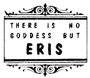

|
The PENTABARF was discovered by the hermit Apostle Zarathud in the Fifth Year of The Caterpillar. She found them carved in gilded stone, while building a sun deck for his cave, but their import was lost for they were written in a mysterious cypher. However, after 10 weeks & 11 hours of intensive scrutiny she discerned that the message could be read by standing on his head and viewing it upside down.
I - There is no Goddess but Goddess and She is Your Goddess. There is no Erisian Movement but The Erisian Movement and it is The Erisian Movement. And every Golden Apple Corps is the beloved home of a Golden Worm.
II - A Discordian Shall Always use the Official Discordian Document Numbering System.
III - A Discordian is Required during his early Illumination to Go Off Alone & Partake Joyously of a Hot Dog on a Friday; this Devotive Ceremony to Remonstrate against the popular Paganisms of the Day: of Catholic Christendom (no meat on Friday), of Judaism (no meat of Pork), of Hindic Peoples (no meat of Beef), of Buddhists (no meat of animal), and of Discordians (no Hot Dog Buns).
IV - A Discordian shall Partake of No Hot Dog Buns, for Such was the Solace of Our Goddess when She was Confronted with The Original Snub.
V - Discordians are Prohibited of Believing what they read.
IT IS SO WRITTEN! SO BE IT. HAIL DISCORDIA! PROSECUTORS WILL BE TRANSGRESSICUTED. |